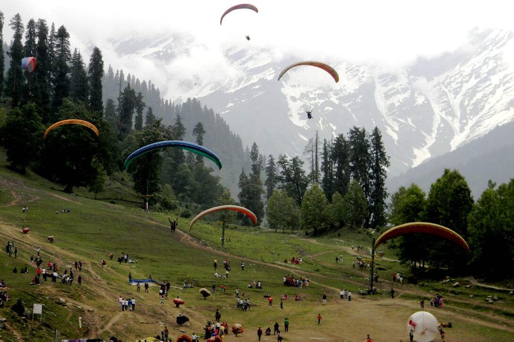
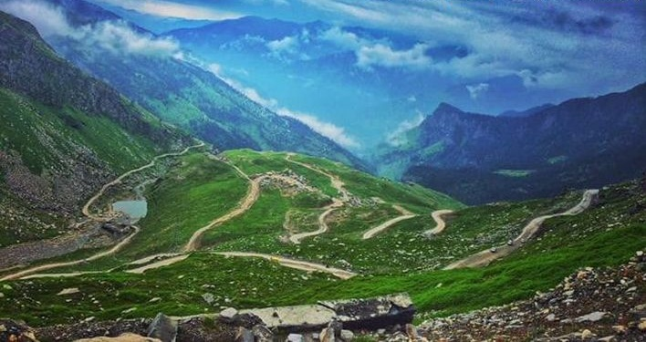
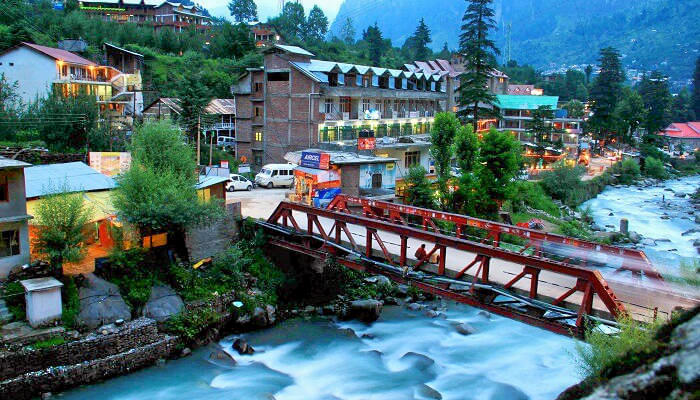
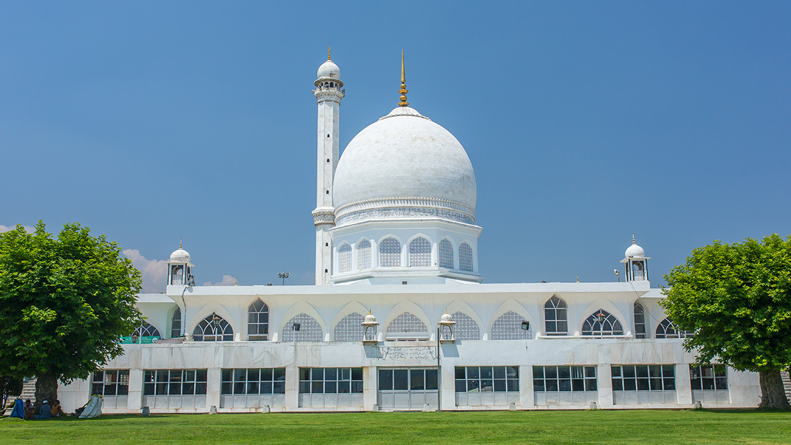
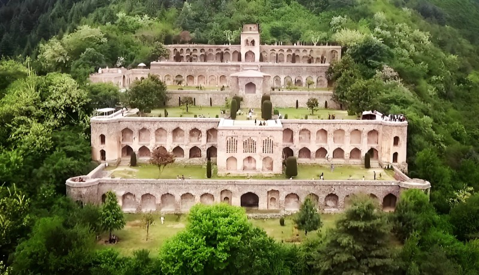
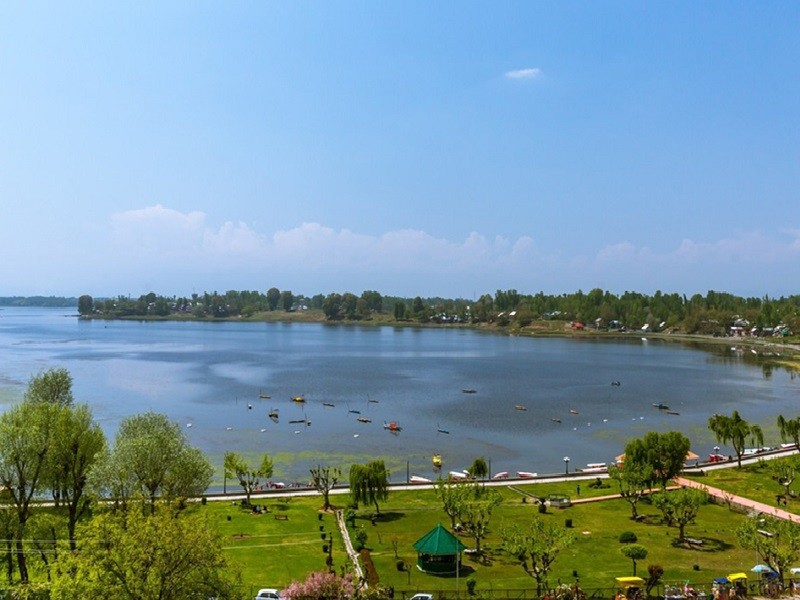
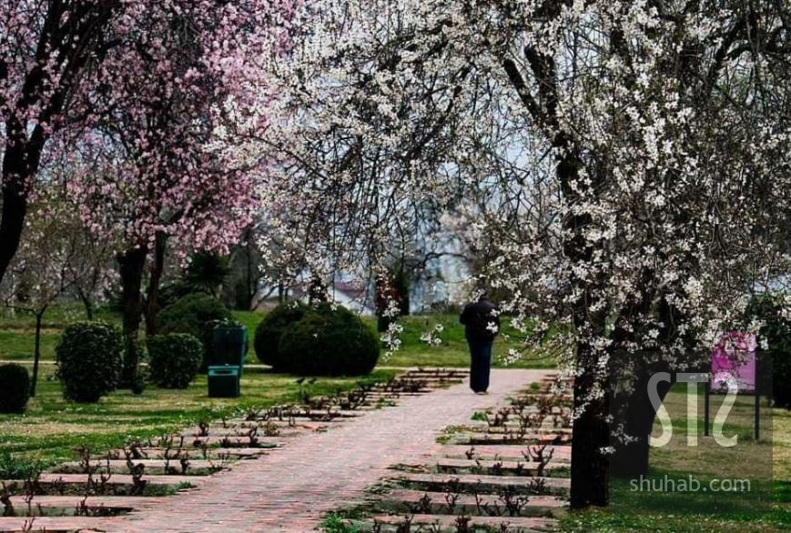
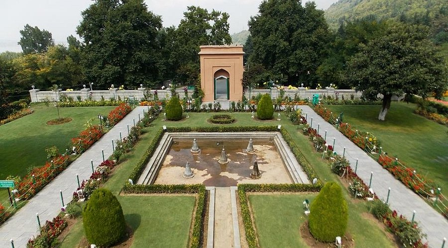
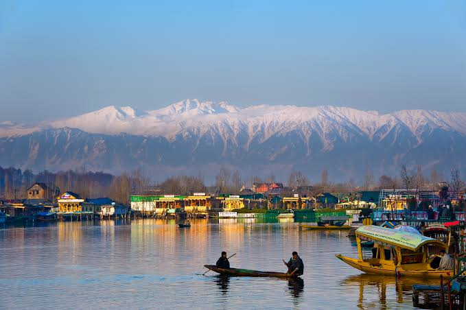
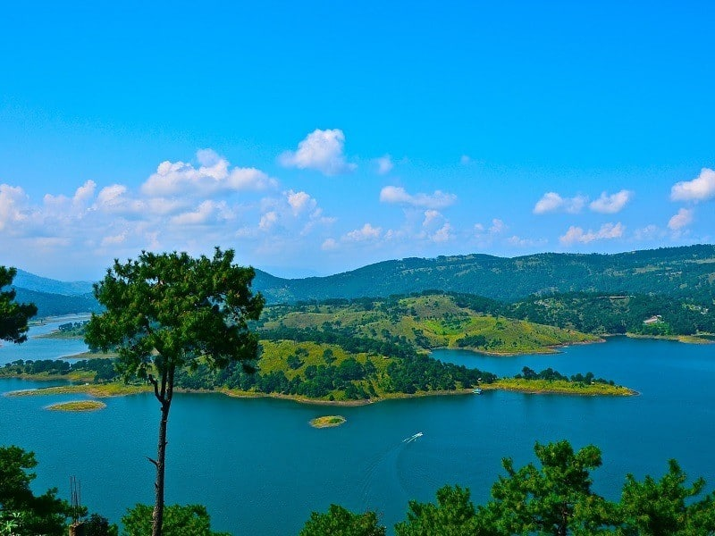

Solang Valley, located 14km from Manali, is a popular destination known for its scenic beauty
and
adventure activities.
Key highlights include paragliding, zorbing, skiing, and ropeway rides.
The valley offers both
summer and winter sports
options, making it a year-round attraction.
1. Adventure Hub:
Solang Valley is renowned for its adventure activities like paragliding, zorbing, skiing,
and
snowboarding.
2. Best Time to Visit:
The valley is a popular destination for both summer and winter sports. Summer months
(March to June)
are ideal for
paragliding and zorbing, while winter (December to February)
offers excellent skiing and
snowboarding conditions.
3. Ropeway:
Solang Valley features a ropeway that takes visitors to a high vantage point for scenic views.
4. Natural Beauty:
Besides adventure sports, Solang Valley boasts stunning natural beauty with snow-capped
mountains,
lush greenery, and
the Beas River.
5. Family-Friendly:
Solang Valley offers a range of activities suitable for families, including horse riding,
zorbing,
and a ropeway ride.

Rohtang Pass, a high-altitude mountain pass in the Himalayas, is known for its stunning
scenery and challenging terrain.
Key points include its location connecting the Kullu Valley with Lahaul and Spiti, the source of the
Beas River at Beas
Kund, its name meaning "pile of corpses" due to past fatalities, its strategic importance for India, and
its popularity
for adventure activities and scenic drives.
1. Location and Accessibility:
Rohtang Pass is situated in the Pir Panjal range of the Himalayas, at an altitude of 3,978 meters
(13,050 feet). It
connects the Kullu Valley with the Lahaul and Spiti valleys, and is a major route on the Leh-Manali
Highway.
2. Gateway to Lahaul & Spiti:
The pass serves as a gateway to the remote and picturesque Lahaul and Spiti valleys, which are known for
their rugged
beauty and Buddhist culture.
3. Beas Kund:
Beas Kund, the origin of the Beas River, is located at Rohtang Pass. This makes the pass not only a
geographical feature
but also a significant point in the region's hydrology.
4. Strategic Importance:
Rohtang Pass holds strategic importance for India due to its location near the borders with China and
Pakistan. It is a
key route for military and civilian transportation to the region.
5. Tourism and Adventure:
Rohtang Pass is a popular tourist destination, known for its scenic beauty, snow activities like skiing
and
snowboarding, and adventurous drives. It also offers stunning views of the surrounding mountains,
glaciers, and valleys.

Old Manali is a serene village near Manali, India, known for its tranquil atmosphere and scenic
beauty, offering a
peaceful escape from the bustling city. It's a popular destination for backpackers
and food
enthusiasts, with charming
cafes and local shops.
1. Proximity and Accessibility:
Old Manali is located about 3 km from the main Manali market, accessible by auto-rickshaw
or a
20-minute uphill walk.
2. Backpacker's Paradise and Foodie Haven:
It's a favorite spot for backpackers seeking a relaxed vibe and a place to unwind. Old Manali also
offers a diverse
culinary scene, with numerous cafes and restaurants serving local and international
cuisine.
3. Historical Significance:
According to local lore, Old Manali is where Sage Manu, the progenitor of humanity, stepped
out of
his boat after the
Great Flood to repopulate the earth, hence the name "Manu-alaya"
(home of Manu).
4. Scenic Beauty:
The village is surrounded by lush greenery, offering picturesque views of the surrounding
mountains
and valleys. It is
situated at a height of 6589 feet, providing stunning vistas.
5. Things to Do:
Old Manali offers a range of activities, including visiting the Old Manali market, exploring
the
Jogini Waterfall,
relaxing at cafes, and enjoying local cuisine.

Hazratbal Masjid, also known as Hazratbal Shrine, is a significant Islamic religious site in Srinagar,
Kashmir, renowned
for housing a relic believed to be a hair of the Prophet Muhammad. It is the only domed mosque in
Srinagar and holds
great importance as a place of worship and pilgrimage.
1. Relic of the Prophet:
The primary reason for the shrine's significance is the presence of a hair believed to be from the beard
of Prophet
Muhammad, known as Moi-e-Muqqadas.
2. Historical Importance:
The relic was brought to Kashmir in 1700 and the shrine was built to house it by Inayat Begum, the
daughter of Khwaja
Nur-ud-Din Eshai.
3. Architectural Significance:
The mosque is the only domed mosque in Srinagar, adding to its unique architectural identity and appeal.
4. Location on Dal Lake:
Situated on the banks of the picturesque Dal Lake, the mosque offers stunning views and a serene
atmosphere, making it a
popular tourist attraction.
5. Devotion and Pilgrimage:
The mosque is a focal point for religious gatherings, especially during Fridays and Islamic festivals,
when the relic is
displayed to devotees.
6. Other Names:
The shrine is also known by other names like Dargah Sharif, Assar-e-Sharief, and Madinat-us-Sani.

Pari Mahal, also known as "The Palace of Fairies," is a historical monument in Srinagar,
Jammu and
Kashmir, India. It's
a seven-terraced garden built atop the Zabarwan mountain range,
offering panoramic views of Dal Lake
and the city.
1. Historical Significance:
Pari Mahal was originally a Buddhist monastery before being converted into an astronomical
observatory and school by
Prince Dara Shikoh, son of Mughal Emperor Shah Jahan,
in the mid-17th century.
2. Architectural Style:
The structure showcases the elegance of Islamic architecture with its arched niches, halls,
and
terraced gardens. The
terraces are arranged in a north-south alignment, with the
uppermost point at the south.
3. Astronomical Observatory:
It served as a center for learning astronomy and astrology, with Prince Dara Shikoh utilizing it
for
his studies and
observations.
4. Location and Views:
Perched on the Zabarwan Mountains, Pari Mahal offers breathtaking views of Dal Lake and the
surrounding landscape.
5. Cultural Importance:
Today, Pari Mahal stands as a testament to Mughal-era art and culture, attracting
tourists
interested in its history,
architecture, and scenic beauty.

Manasbal Lake, located in Jammu and Kashmir, is known for its serene beauty and unique features. Five
key points about
it are: it's the deepest lake in Kashmir, renowned for its abundant lotus blooms in July and August, a
popular spot for
birdwatching, contains the historic Mughal garden, Jarokha Bagh, and offers activities like shikara
rides and fishing.
1. Deepest Lake in Kashmir:
Manasbal Lake is the deepest lake in the Kashmir valley, reaching a depth of 13 meters (43 feet).
2. Lotus Blooms:
The lake is famous for its extensive lotus blooms, particularly during July and August. The lotus
flowers and their
rootstocks add to the lake's beauty and are also harvested and used by locals.
3. Birdwatching:
Manasbal Lake is a haven for birdwatchers, serving as one of the largest natural spawning grounds for
aquatic birds in
the region.
4. Historic Mughal Garden:
The Jarokha Bagh, a Mughal garden, overlooks the lake and is attributed to Mughal Empress Nur Jahan,
offering stunning
views.
5. Activities and Amenities:
Besides shikara rides, birdwatching, and fishing, the lake area has a park with a walkway around the
lake, making it a
great destination for relaxation and recreation.

Badamwari Garden, located in Srinagar, India, is a beautiful garden known for its almond blossoms
in
the spring, its
serene atmosphere, and its historical significance. It's a popular spot for locals and
tourists
alike, offering a
tranquil escape with scenic views.
1. Almond Blossoms:
The garden is famous for its almond trees, which bloom with white and pink flowers in the spring,
typically around
March, marking the start of the season. This makes it a popular destination for
nature lovers and
photographers.
2. Historical Significance:
Historians believe the garden existed even before the 14th century, predating the reign of Sultan
Zain-ul-Abidin. The
garden is believed to have been built before the 14th century.
3. Serene Ambiance:
Badamwari Garden offers a tranquil and peaceful environment, making it a perfect place for
relaxation and enjoying the
beauty of nature. It's known for its lush greenery and scenic landscapes.
4. Location:
The garden is situated at the foothills of Hari Parbat, providing a picturesque setting with views
of the fort and the
surrounding landscape. It's located at the foothills of Koh-e-Maran/Hari Parvat.
5. Visitor Experience:
The garden features trails for walking, a dome-shaped structure, and fountains, enhancing the
visitor experience. It's
also a popular spot for picnics and enjoying local Kashmiri culture.
The Jammu and Kashmir Tourism
Department also hosts
the annual Almond Blossom Festival here.

Mughal gardens are characterized by their Persian-style design, symmetrical layouts, and use of water
features, often
incorporating a char bagh (four-part) structure. Important features include running water, pools,
fountains, and
rectilinear designs within walled enclosures. They served as places for relaxation, reflection, and even
official
gatherings.
1. Persian Influence:
Mughal gardens are deeply rooted in Persian garden design, incorporating elements like rectilinear
layouts and walled
enclosures.
2. Char Bagh Structure:
A defining feature is the char bagh, a quadrilateral garden plan divided into four squares by walkways
or water
channels, often representing the four rivers of Paradise in Islamic tradition.
3. Water Features:
Running water, pools, and fountains are central to the garden's design, providing a cooling effect and
enhancing the
visual appeal.
4. Rectilinear Layout:
The gardens are typically arranged in a formal, symmetrical, and rectangular or square pattern,
emphasizing order and
balance.
5. Multi-Purpose Spaces:
Beyond their aesthetic beauty, Mughal gardens served as spaces for relaxation, contemplation, and even
official meetings
and social gatherings

Dal Lake, located in Srinagar, Kashmir, is a prominent tourist destination known for its scenic
beauty, houseboats, and
vibrant culture. It's a major attraction in Kashmir and a significant source
of livelihood for
locals. The lake is
surrounded by Mughal gardens, parks, and offers stunning
views of the Pir Panjal mountains.
1. Iconic Tourist Destination:
Dal Lake is synonymous with Srinagar and Kashmir tourism, drawing visitors for its picturesque
scenery, including the
iconic houseboats and vibrant shikaras.
2. Surrounded by Mughal Gardens:
The lake is bordered by famous Mughal gardens like Shalimar Bagh and Nishat Bagh, offering
breathtaking views and a
glimpse into the region's rich history.
3. Houseboats and Shikaras:
Dal Lake is famous for its unique houseboats, offering a unique accommodation experience,
and
shikaras, the traditional
gondola-like boats used for transportation and sightseeing.
4. Important for Local Economy:
Beyond tourism, Dal Lake is a vital source for fishing and water plant harvesting, contributing
to
the livelihoods of
many local residents.
5. Unique Floating Markets:
The lake features floating markets where vendors sell a variety of goods, including local
handicrafts, souvenirs, and
fresh produce, adding to the vibrant and unique experience.

Umiam Lake, also known as Barapani, is a significant reservoir in Meghalaya, India, known for its scenic
beauty and
recreational opportunities. It's a popular spot for boating, water sports, and sightseeing. The lake was
formed by
damming the Umiam River in the early 1960s as part of a hydel power project.
1. Scenic Beauty and Recreation:
The lake is surrounded by hills and is a picturesque location, making it a popular spot for sightseeing
and enjoying the
dramatic scenery.
2. Water Sports Hub:
Umiam Lake is a major center for water sports, including boating, water skiing, and speed boat rides.
According to
Tripadvisor, there's also a water sports complex offering activities like pedal boating, kayaking, and
more.
3. Hydropower Generation:
The lake was created to serve as a reservoir for a hydroelectric power project, which is a crucial
aspect of the
region's energy infrastructure.
4. Size and Location:
Umiam Lake covers a vast area of 221 sq km, making it larger than some small countries, according to
India.Com. It's
located 15 km north of Shillong, on the way from the airport to the city.
5. Other Activities:
Besides water sports, visitors can enjoy trekking, camping, and fishing at Umiam Lake. There are also
picnic spots and a
walking track around the lake. The Orchid Lake Resort and Lum Nehru Park offer a tranquil environment
for relaxation.